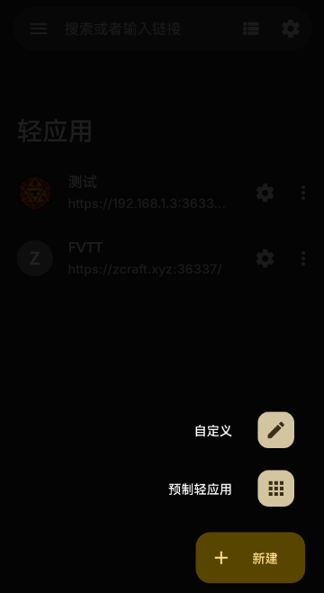
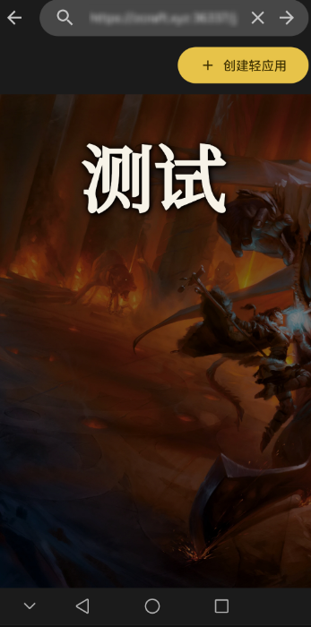
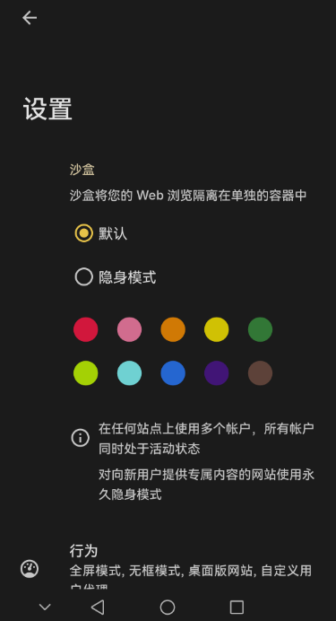
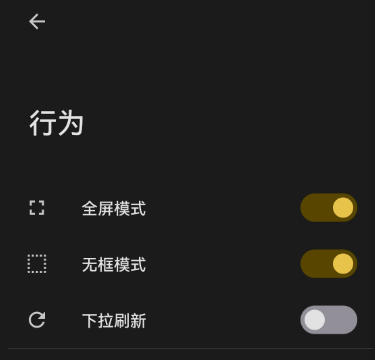
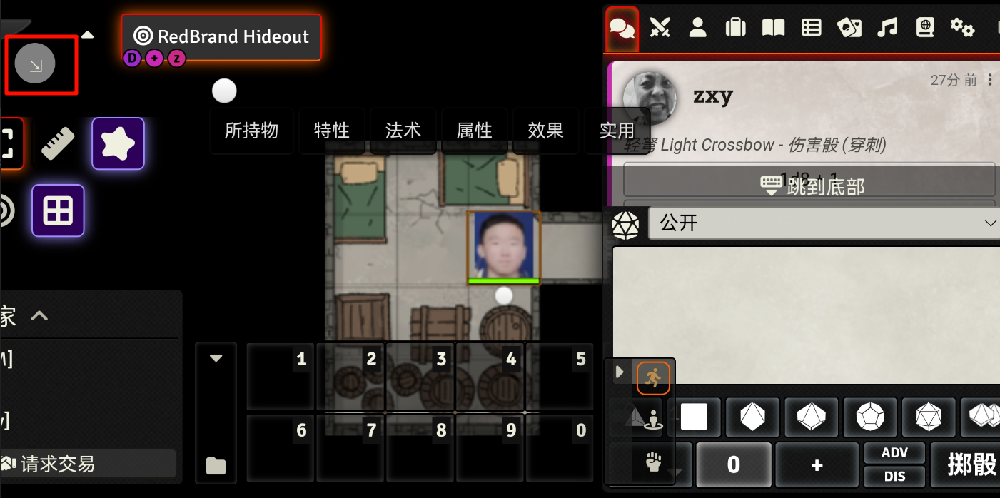
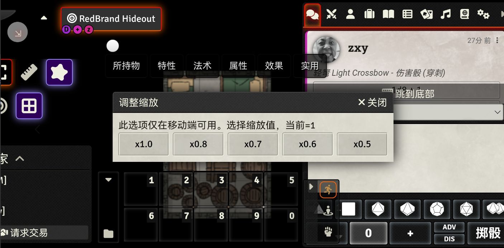

使用手机
尽管 FVTT 并非为手机设计，在一些软件、模组和修改的帮助下它仍能在手机上运行。
准备步骤
安装 Hermit 并打开
为了尽量加大手机的显示空间，我们需要支持无框全屏的浏览器。
在这里下载安装 Hermit.
点击右下角的
新建并点击自定义 在上方输入地址后点击箭头访问，加载后点击
创建轻应用，在弹出的对话框确认 回到主界面点击刚创建的旁的设置按钮打开设置
 打开
行为， 并开启全屏模式和无框模式 之后就可以打开轻应用使用了~
使用
打开配置好的轻应用，将手机横屏。若有错误提示可以忽略。之后按照正常步骤登录。
待加载完成后，点击左上角的按钮
 在弹出的窗口中选择缩放倍数（取决于设备，我使用的是0.6）
 之后便可以正常使用了。操作和电脑端相似，且用长按（0.5s）视作右键。
左侧出现黑框，或者十分卡顿，请参照常见问题。
Last modified: 08 七月 2024